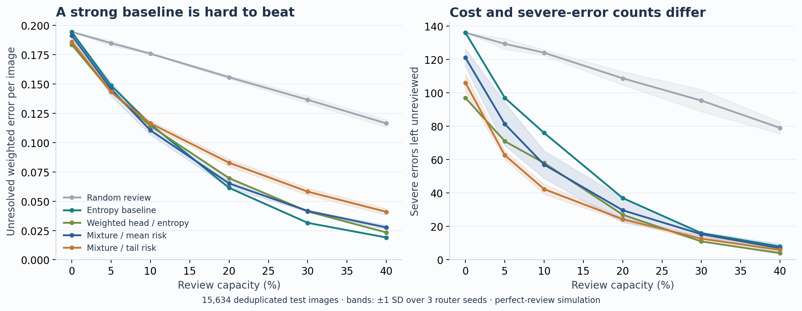
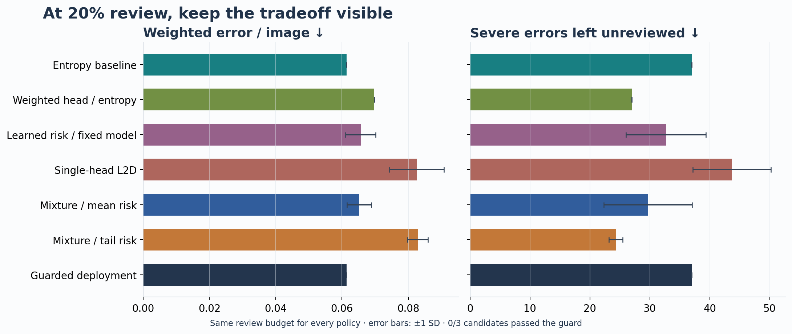
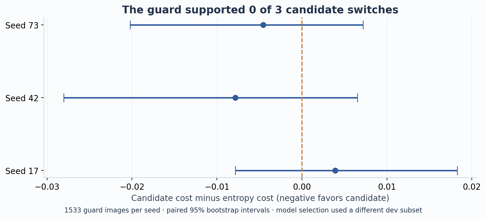
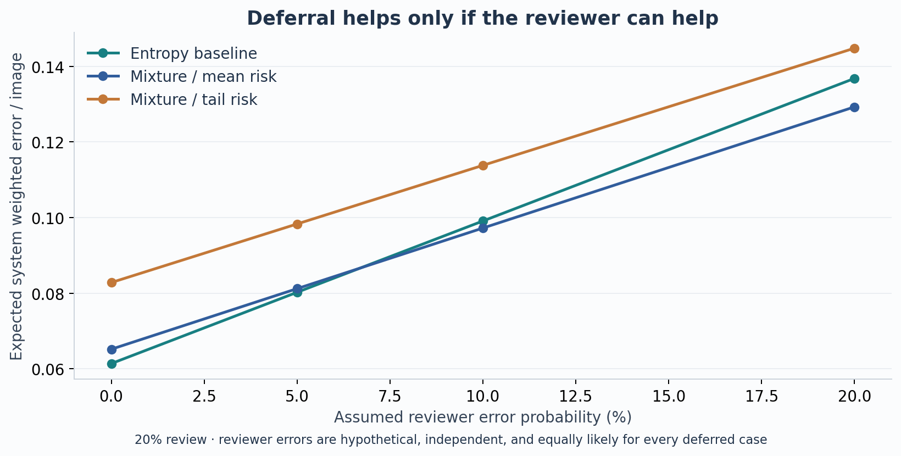
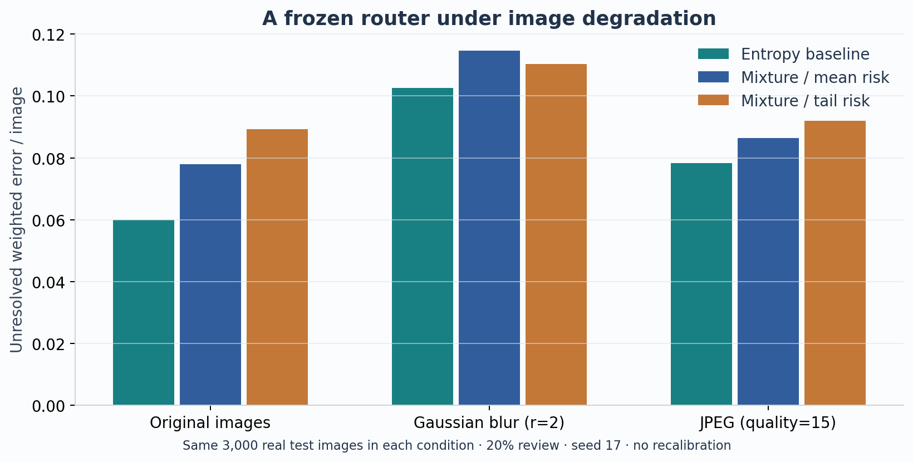

MEDIC · empirical AI safety · local research report
Knowing when to keep
the simpler decision rule.
We tested learned expert routing and tail-risk scores against an entropy baseline. A separate evidence check decides whether the candidate earns a switch.
15,634deduplicated test images
3 seedsrouter fits, one fixed backbone
0 / 3candidates passed the guard
What does the review budget buy?
These curves compare equal batch capacities. Shading is variation across router seeds, not a confidence interval. Deferred cases have zero residual loss here: a perfect-review upper bound.

One operating point, two priorities
Weighted cost and the number of severe mistakes answer different questions. Routing to a different model changes which errors exist, so severe-error capture percentages alone are not directly comparable across models.

Evidence before a switch
The candidate must beat entropy on a separate guard subset before deployment. 0 of 3 candidates passed. This is an empirical check, not a guarantee under distribution shift.

Review is a resource, not an oracle
No human reviewer was observed in these experiments. This sensitivity analysis assigns a hypothetical independent reviewer error rate and includes the cost of introducing errors on previously correct cases.

Actual image corruption, not just score noise
Blur and JPEG degradation were applied to the same real images and passed through ViT again. This paired subset study measures corruption sensitivity; it does not establish adversarial or unseen-event robustness.

What is still unknown?
The costs and human reviewer quality are assumptions. Test data was examined during development; the backbone also used dev data for checkpoint selection. These results support an exploratory engineering study, not a certified safety claim.